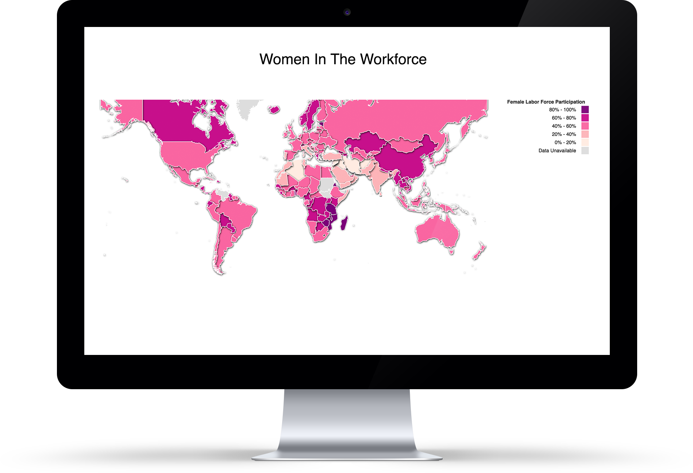
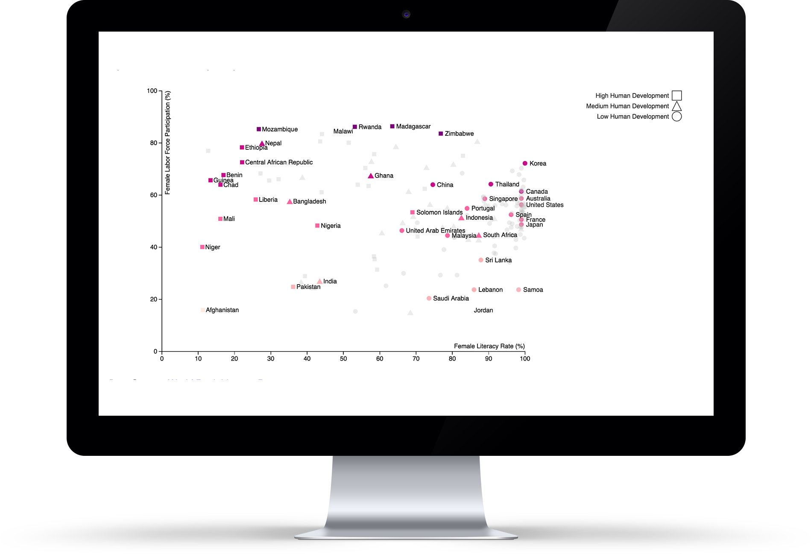
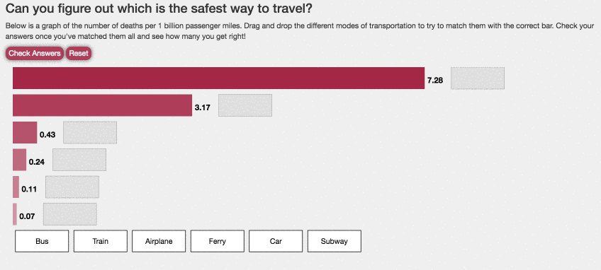
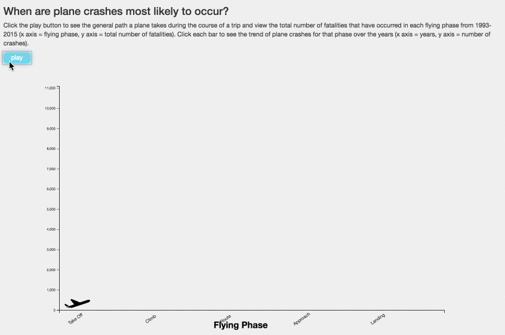

Data Visualization
DATA VISUALIZARTION PROJECTS
PROGRAMMING LANGUAGE: JavaScript d3, HTML/CSS
PROJRCT DESCRIPTION:
These data-driven web-applications were programmed by HTML/CSS, Javascript, d3.js, svg and other web developed common tools. They also include data representation with relational and non-relational databases, data mining to find patterns and make predictions, and graphical presentation for visualization.
Women in the workforce
To take a closer look into how many women comprise the labor force in the world and how far I have really come, I took to the female labor force participation data from The World Bank’s abundance of economic data.
 The first bucket ranges from 0 to 20% of women in the labor force while the last one ranges from 80 to 100% as seen on the map. The darker the pink, the more women in the labor force. These colors were selected from colorbrewer2.org. To effectively display this information visually, made use of json and d3.
The scatterplot shows this female literacy data in comparison to the female participation rate. The colors were kept consistent with those from the map and shapes were used to show the difference between a country with high human development as opposed to one with low human development or medium human development.In addition, to prevent the audience from being overwhelmed with information, some points on the scatterplot were made darker than others.
US Flight Crash
Our story focuses on the safety of traveling which narrows down specifically into the dangers of transportation by airplane. I were interested in seeing if there were major changes in crime rates for the US over the years.

A horizontal bar graph where each barrepresented the number of deaths for a different mode of transportation. Users can drag and drop these labels into the gray boxes, trying to match the mode of transportation with the correct bar of the graph. They can then check their answers with the “Check Answers” button to see which ones they got wrong (turns red) or right (turns green) and view the correct answers (which appear in green next to each wrong answer).
A horizontal bar graph where each barrepresented the number of deaths for a different mode of transportation. Users can drag and drop these labels into the gray boxes, trying to match the mode of transportation with the correct bar of the graph. They can then check their answers with the “Check Answers” button to see which ones they got wrong (turns red) or right (turns green) and view the correct answers (which appear in green next to each wrong answer).
This game like interactivity is meant to: (1) engage users when they first land on the page and (2) get them thinking about which modes of transportation are more dangerous than others.
After seeing just how “safe” airplane travel is (as it had only 0.07 deaths per billion miles compared to 7.28 for cars), I wanted to get a better idea of what actually causes plane crashes. To do this, I found data that had information about all commercial plane crashes from 1993-2015. I created a stacked bar chart to display the number of fatalities that occurred each year due to the different types of causes: mechanical (orange), human error (yellow), criminal (red), weather (blue), and unknown (gray). Users can then click on the different icons representing each type of cause to select/filter which causes they want to look at.
This histogram is a stacked bar chart. Stack method enables all layers with felxible y-position.

For the third visualization I were interested to see what other factors go into plane crashes. I decided to look at the different flight phases and how that impacts the number of fatalities that occur as well as the number of crashes. To do this, I first start off with an animation that shows the general course a plane takes over the duration of a normal flight (this starts when the user presses the play button). This is to help the user understand what each of the phases (take off, climb, route, approach, and landing) are and what each looks like for the plane. The user is then shown bars representing the total number of fatalities that have occurred in each phase from 1993-2015. The user can click on each bar to see a line graph that displays the total number of crashes that have occurred in that phase over the years.
US Adult Obseity Rate
Converted the obesity rate per state and poverty rate perstate into circles of varying sizes and colors. The circles are positioned using the FIPS state code each representing a state.
Each data set was converted using a scale to increase the differences between the variables, by taking the original value and applying this formula: (size/15)^4.
The right interactive bar shows 3 different variables, hence have are represented by 3 different colors. The % of their growth is represented by hues of colors, wherein lower % growth is depicted by lighter hue, while higher % growth is depicted by darker hue.
For the second visualization, it shows relationship between obesity and poverty across all states. I decided to create a double histogram, with obesity on one side (facing upward), and poverty on its flipped side (facing downward).